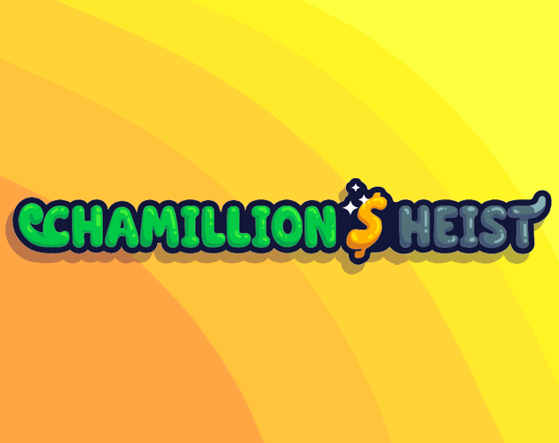
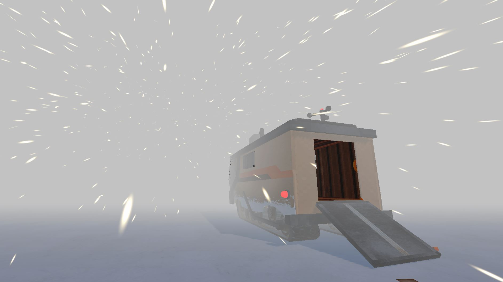
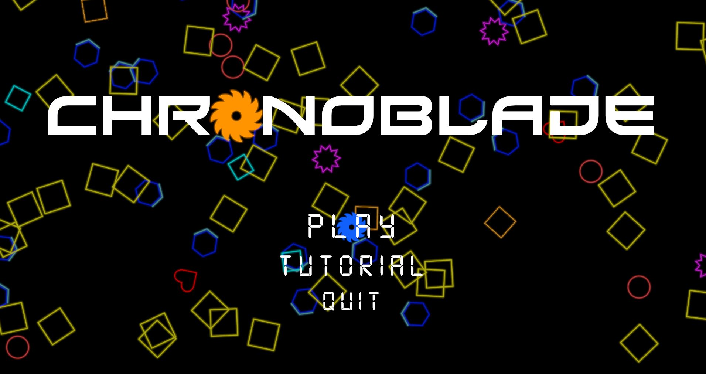

GODOT / MULTIPLAYER
01Chamillion $ Heist
An asymmetric multiplayer game where chameleon thieves infiltrate a museum while rhino guards attempt to stop them.
GAME DEVELOPER
Game developer focused on gameplay programming, multiplayer systems and creating responsive, engaging player experiences.
01
SELECTED WORK

GODOT / MULTIPLAYER
01An asymmetric multiplayer game where chameleon thieves infiltrate a museum while rhino guards attempt to stop them.

UNITY / SURVIVAL HORROR
02A first-person survival horror experience set in Antarctica, built around exploration, environmental storytelling and radio-based navigation.

UNITY / ACTION
03A combat-focused action project centered around time manipulation, blade redirection and responsive moment-to-moment gameplay.
02
ABOUT
I'm a game developer with experience working in both Unity and Godot.
I particularly enjoy gameplay programming, multiplayer systems, combat mechanics, UI, prototyping and improving player feedback.
I like working across both programming and game design, especially when solving technical problems directly improves how a game feels to play.
03
WHAT I WORK WITH
LET'S TALK
I'm currently interested in apprenticeship, internship and junior opportunities in game development.
asab@live.dk